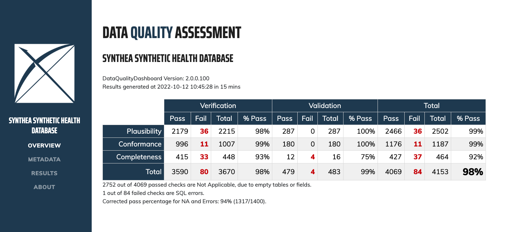

DataQualityDashboard is part of HADES.
The goal of the Data Quality Dashboard (DQD) project is to design and develop an open-source tool to expose and evaluate observational data quality.
Introduction
This package will run a series of data quality checks against an OMOP CDM instance (currently supports v5.4, v5.3 and v5.2). It systematically runs the checks, evaluates the checks against some pre-specified threshold, and then communicates what was done in a transparent and easily understandable way.
Overview
The quality checks were organized according to the Kahn Framework1 which uses a system of categories and contexts that represent strategies for assessing data quality. For an introduction to the kahn framework please click here.
Using this framework, the Data Quality Dashboard takes a systematic-based approach to running data quality checks. Instead of writing thousands of individual checks, we use “data quality check types”. These “check types” are more general, parameterized data quality checks into which OMOP tables, fields, and concepts can be substituted to represent a singular data quality idea. For example, one check type might be written as
The number and percent of records with a value in the cdmFieldName field of the cdmTableName table less than plausibleValueLow.
This would be considered an atemporal plausibility verification check because we are looking for implausibly low values in some field based on internal knowledge. We can use this check type to substitute in values for cdmFieldName, cdmTableName, and plausibleValueLow to create a unique data quality check. If we apply it to PERSON.YEAR_OF_BIRTH here is how that might look:
The number and percent of records with a value in the year_of_birth field of the PERSON table less than 1850.
And, since it is parameterized, we can similarly apply it to DRUG_EXPOSURE.days_supply:
The number and percent of records with a value in the days_supply field of the DRUG_EXPOSURE table less than 0.
Version 1 of the tool includes 24 different check types organized into Kahn contexts and categories. Additionally, each data quality check type is considered either a table check, field check, or concept-level check. Table-level checks are those evaluating the table at a high-level without reference to individual fields, or those that span multiple event tables. These include checks making sure required tables are present or that at least some of the people in the PERSON table have records in the event tables. Field-level checks are those related to specific fields in a table. The majority of the check types in version 1 are field-level checks. These include checks evaluating primary key relationship and those investigating if the concepts in a field conform to the specified domain. Concept-level checks are related to individual concepts. These include checks looking for gender-specific concepts in persons of the wrong gender and plausible values for measurement-unit pairs. For a detailed description and definition of each check type please click here.
After systematically applying the 24 check types to an OMOP CDM version approximately 4,000 individual data quality checks are resolved, run against the database, and evaluated based on a pre-specified threshold. The R package then creates a json object that is read into an RShiny application to view the results.

Features
- Utilizes configurable data check thresholds
- Analyzes data in the OMOP Common Data Model format for all data checks
- Produces a set of data check results with supplemental investigation assets.
Data Requirements
Prior to execution the DataQualityDashboard package requires that the CDM_SOURCE table is properly populated. The following table is a guide to the expected contents of the CDM_SOURCE table.
| cdmFieldName | userGuidance | etlConventions |
|---|---|---|
| cdm_source_name | The name of the CDM instance. | Descriptive name for the source data. |
| cdm_source_abbreviation | The abbreviation of the CDM instance. | The abbreviation should consistent for different release from the same source. |
| cdm_holder | The holder of the CDM instance. | The institution that controls access to the data. If possible include contact information for who to contact to request access to the data. |
| source_description | The description of the CDM instance. | Add notes, caveats, special characteristics about the source data that would not be assumed from the general descriptive name. This description intended to help analysts determine if the data is suitable for the problem they are studying. |
| source_documentation_reference | Reference to where one can find documentation about the source data. | Can include URLs, file name, source data experts contact information (if they agree to it) |
| cdm_etl_reference | Reference to where one can find documentation about the source to ETL into OMOP CDM. | Assuming there is a document or files (such as Rabbit in the Hat) describing the ETL. May be the location of the ETL source and documentation repository. |
| source_release_date | The release date of the source data. | When the source data was made available for ETL’ing. For sites doing incremental updates, the date the last increment made available. This implies that for sites doing incremental updates the CDM Source table should be updated to reflect that changes were made to the CDM. |
| cdm_release_date | The release date of the CDM instance. | When the source data was made available for general use. For sites doing incremental updates, this implies that the CDM Source table should be updated to reflect that changes were made to the CDM. |
| cdm_version | Identifies the CDM version | Enter the numeric portion of the version, e.g. 5.4 |
| cdm_version_concept_id | The Concept Id representing the version of the CDM. | SELECT concept_id WHERE domain = Metadata and vocabulary_id = CDM and concept_code like %[numeric portion of the version]% |
| vocabulary_version | The vocabulary version used in the ETL | Obtained by SELECT vocabulary_version FROM vocabulary WHERE vocabulary_id = ‘None’ |
System Requirements
Requires R (version 3.2.2 or higher). Requires DatabaseConnector (version 2.0.2 or higher).
A variety of database platforms are supported, as documented here.
Note that while data quality check threshold files are provided for OMOP CDM versions 5.2, 5.3, and 5.4, the package is currently only tested against versions 5.3 and 5.4.
Installation
See the instructions here for configuring your R environment, including RTools and Java.
In R, use the following commands to download and install DataQualityDashboard:
install.packages("remotes")
remotes::install_github("OHDSI/DataQualityDashboard")User Documentation
Documentation can be found on the package website.
PDF versions of the documentation are also available:
- Vignette: Add a New Data Quality Check
- Vignette: Check Status Descriptions
- Vignette: Running the DQD on a Cohort
- Vignette: Failure Thresholds and How to Change Them
- Vignette: SqlOnly Mode
- Package manual: DataQualityDashboard manual
Support
- Developer questions/comments/feedback: OHDSI Forum
- We use the GitHub issue tracker for all bugs/issues/enhancements
Acknowledgements
- This project is supported in part through the National Science Foundation grant IIS 1251151.
1 Kahn, M.G., et al., A Harmonized Data Quality Assessment Terminology and Framework for the Secondary Use of Electronic Health Record Data. EGEMS (Wash DC), 2016. 4(1): p. 1244. ↩︎